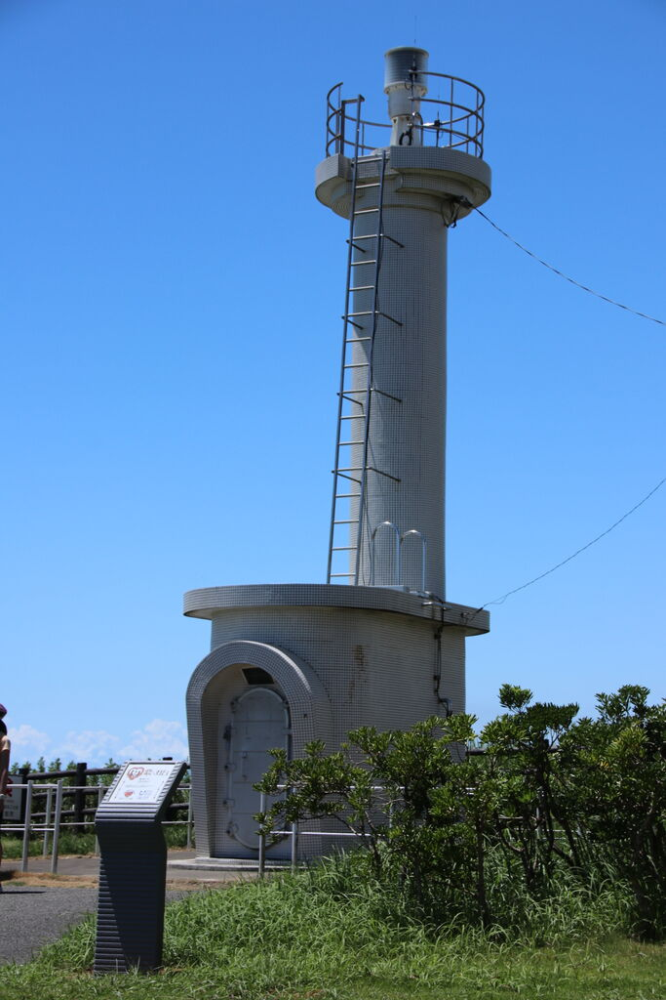
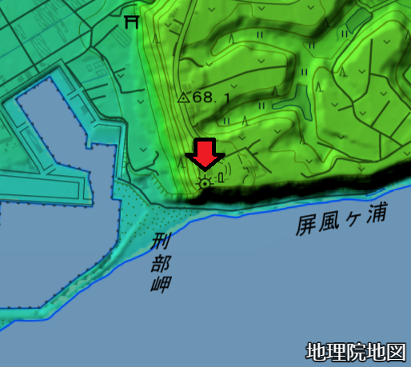
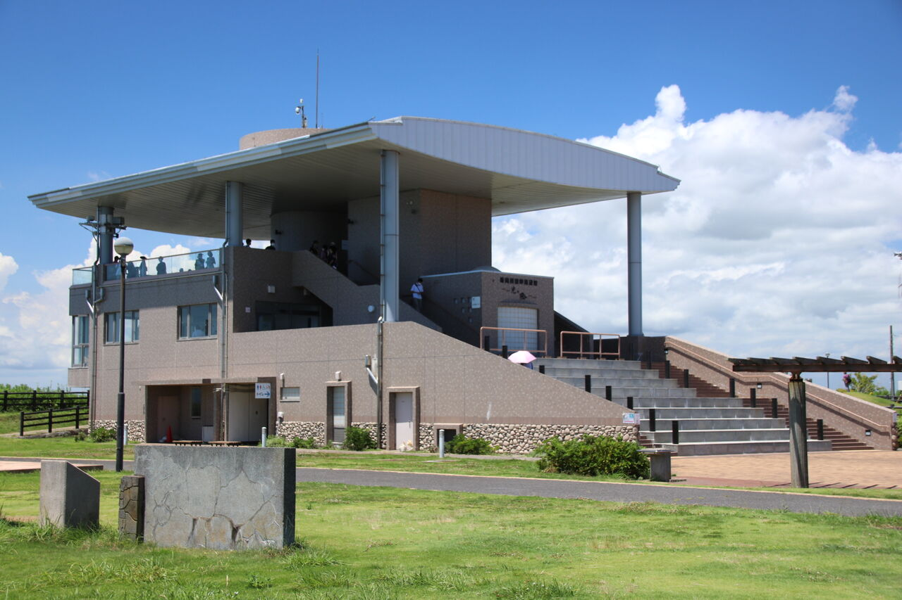
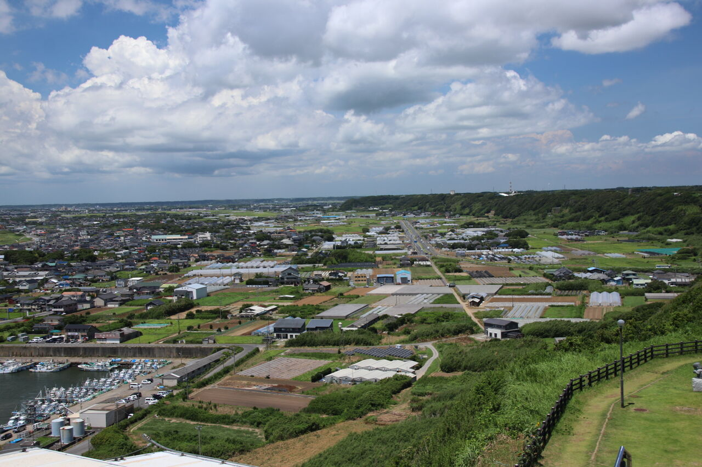
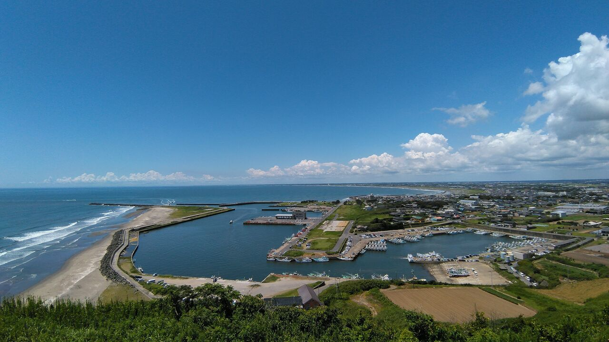
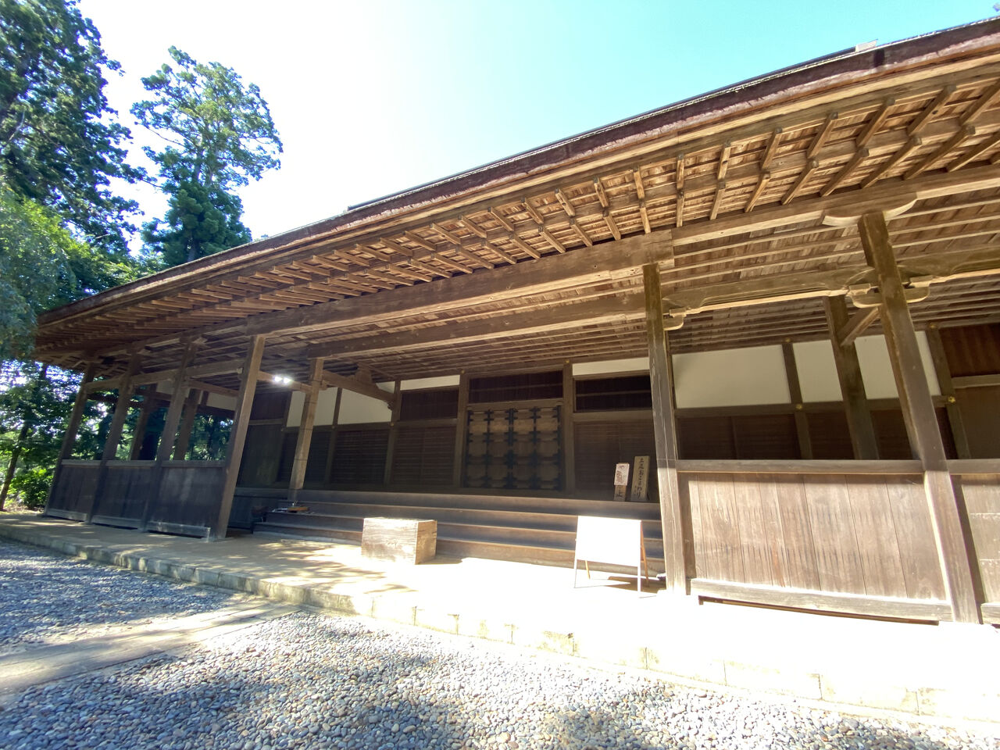
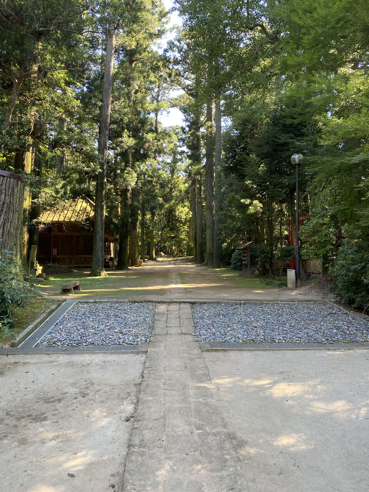
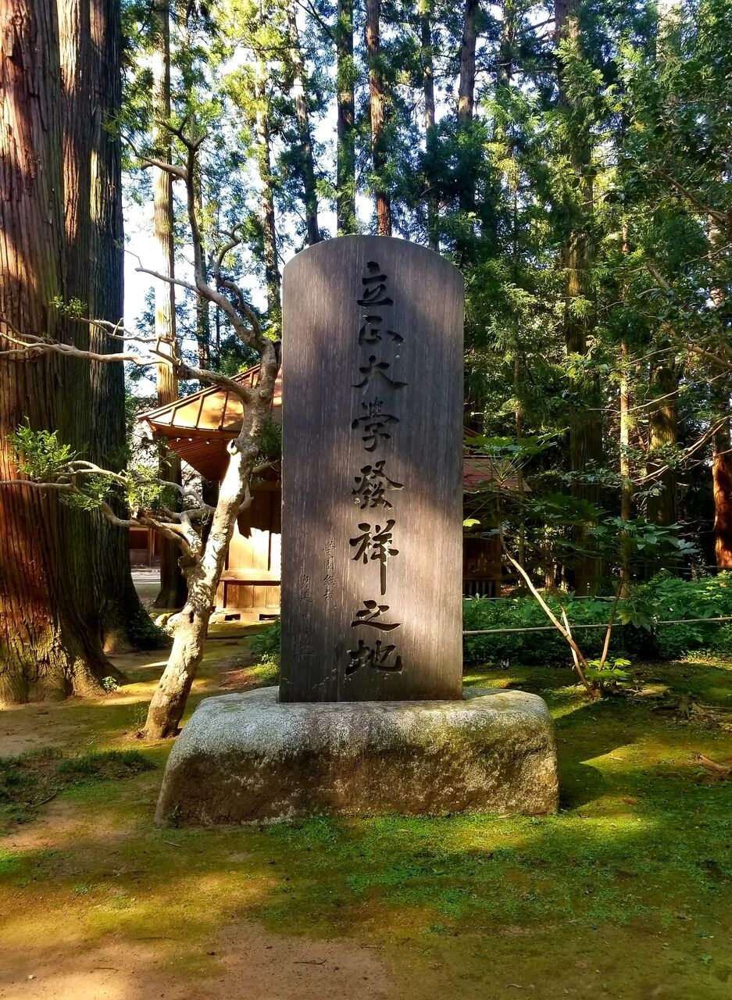
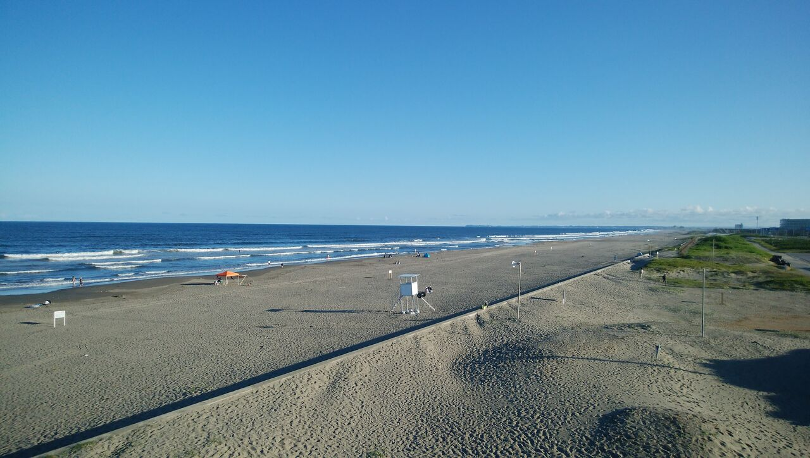

九十九里・匝瑳巡検について、印象に残ったことや、気になったことを挙げながらご紹介したいと思います！
実施日はちょうど天気にも恵まれ、九十九里浜の景色を存分に眺めることができました。
さて、まずは飯岡灯台を訪れました。私は、灯台と聞いて見上げるほど高いものだと思っていました。
実際は意外と小さいですね。
地理院地図(https://maps.gsi.go.jp/)を加工して作成
この灯台は、台地の西端に位置しており、飯岡漁港よりも標高があるので、建物を高くする必要がなかったのだと思われます。
灯台に併設されている展望館です。こちらも建物自体は高くはないですが、眺めは抜群。
展望台から北側を望むと、台地と平野の境目がよくわかります。また、海側は海食崖となっており、のぞき込むには勇気がいります・・・。
ともかく、ここは地形的にも面白いところでした。
西側の眺めは壮観です。手前が飯岡漁港、奥に伸びるのが九十九里浜です。ちなみに、看板によると富士山も見えるらしいのですが、この日は残念ながら拝むことはできませんでした。
お次は匝瑳市の見どころについてです。こちらで印象に残ったのは、なんといっても「飯高檀林跡」でした。国の重要文化財にも指定されている、由緒あるお寺でもあります。
 本堂と、そこに続く参道です。林の奥にたたずむ本堂からは、寂然とした魅力を感じました。
ここでもまた、新たな発見がありました。飯高寺は、かつては日蓮宗の教育機関であり、現在の立正大学の起源となっているそうで、この石碑に記録を残しています。旅先でこうした意外な縁を見つけると、少しうれしくなりますね。
巡検はさらに足を伸ばして九十九里町へ。ここでは不動堂に訪ねてみました。海に行って、山に行って、また海を見るという、だいぶ忙しい旅程になってしまいました。
九十九里ビーチタワーからの写真がこれです。
ここから見ると、改めて九十九里浜のスケールに驚かされます。右を見ても左を見ても、ずっと向こうまで砂浜でした。
ところで、「不動堂納屋」「不動堂新田」「不動堂岡」という地名から、不動堂地区は納屋集落であったことがわかります。訪れる際は周りの土地利用を意識してみると面白いのではないでしょうか？
では、今回の巡検紹介はここで終わりにしたいと思います。お付き合いいただきありがとうございました。